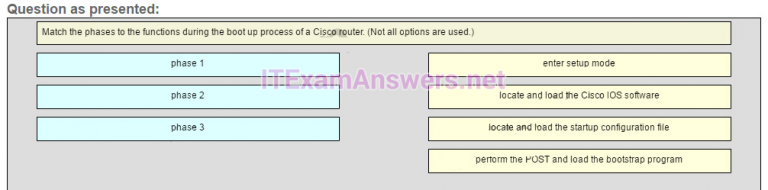
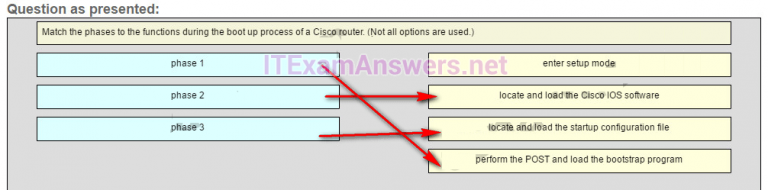
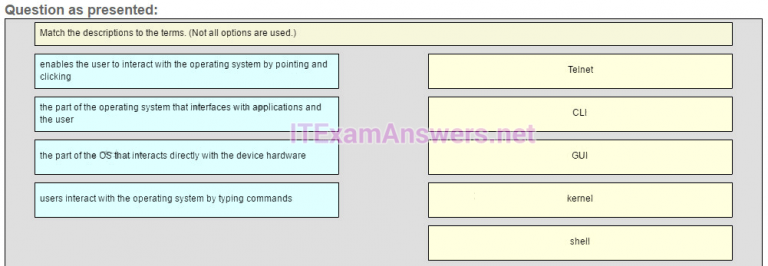
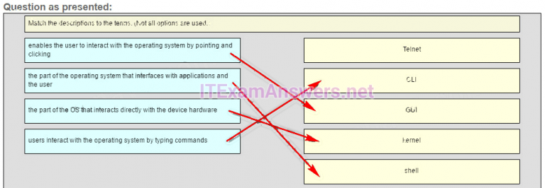
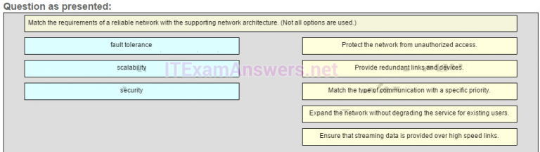
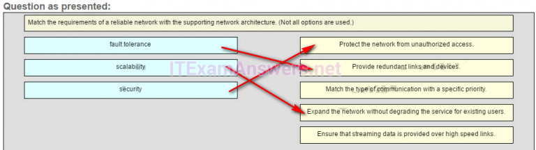
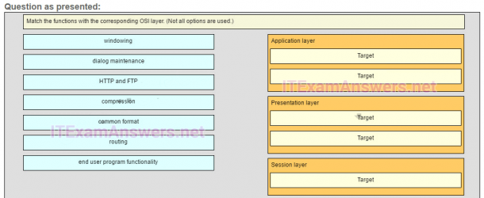
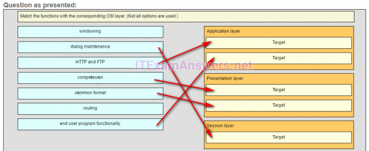

1.¿Qué término se refiere a una red que proporciona acceso seguro a las oficinas corporativas por parte de proveedores, clientes y colaboradores?
- extranet *
- internet
- extendido
- javi
- @javi__super
Explique:
El término Internet se refiere a la colección mundial de redes conectadas. Intranet se refiere a una conexión privada de LAN y WANS que pertenecen a una organización y están diseñadas para ser accesibles a los miembros de la organización, empleados u otros con autorización. Las extranets proporcionan acceso seguro a proveedores, clientes y colaboradores. Extendednet no es un tipo de red.
2.Un usuario de una pequeña empresa está buscando una conexión ISP que ofrezca transmisión digital de alta velocidad a través de líneas telefónicas normales. ¿Qué tipo de conexión ISP se debe utilizar?
- DSL *
- marcar
- satélite
- modem celular
- @javi__super
3.Consulte la presentación. Un administrador está intentando configurar el conmutador pero recibe el mensaje de error que se muestra en la presentación. ¿Cuál es el problema?
- El administrador primero debe ingresar al modo EXEC privilegiado antes de emitir el comando. *
- Se debe utilizar el comando completo, configurar el terminal.
- El administrador ya está en modo de configuración global.
- El administrador debe conectarse a través del puerto de la consola para acceder al modo de configuración global.
- @javi__super

Explicación:
para ingresar al modo de configuración global, el comando configure terminal, o una versión abreviada como config t, debe ingresarse desde el modo EXEC privilegiado. En este escenario, el administrador está en modo EXEC de usuario, como lo indica el símbolo> después del nombre de host. El administrador tendría que usar el comando de habilitación para pasar al modo EXEC privilegiado antes de ingresar el comando de configuración de terminal.
4.¿Qué teclas actúan como una combinación de teclas de acceso rápido que se usa para interrumpir un proceso IOS?
- Ctrl-Shift-6 *
- Ctrl-Shift-X
- Ctrl-Z
- Ctrl-C
- @javi__super
Explique:
Cisco IOS proporciona teclas de acceso rápido y accesos directos para configurar enrutadores y conmutadores. La combinación de teclas de acceso rápido Ctrl-Shift-6 se utiliza para interrumpir un proceso IOS, como un ping o traceroute. Ctrl-Z se utiliza para salir del modo de configuración. Ctrl-C aborta el comando actual. Ctrl-Shift-X no tiene función IOS.
5.Consulte la presentación. Un administrador de red está configurando el control de acceso para cambiar SW1. Si el administrador utiliza Telnet para conectarse al conmutador, ¿qué contraseña se necesita para acceder al modo EXEC del usuario?
- linevtyin *
- Déjame entrar
- secretin
- lineconina
- @javi__super

Explique:
Telnet accede a un dispositivo de red a través de la interfaz virtual configurada con el comando de línea VTY. La contraseña configurada en este punto es necesaria para acceder al modo EXEC del usuario. La contraseña configurada en la línea del comando de consola 0 es necesaria para ingresar a través del puerto de la consola, y las contraseñas secretas de habilitar y habilitar se usan para permitir el ingreso al modo EXEC privilegiado.
6.Un administrador de red ingresa el comando de cifrado de contraseña de servicio en el modo de configuración de un enrutador. ¿Qué logra este comando?
- Este comando evita que alguien vea las contraseñas de configuración en ejecución. *
- Este comando cifra las contraseñas a medida que se transmiten a través de enlaces WAN seriales.
- Este comando habilita un algoritmo de cifrado fuerte para el comando de contraseña secreta habilitada.
- Este comando encripta automáticamente las contraseñas en los archivos de configuración que actualmente están almacenados en la NVRAM.
- @javi__super
7.¿Cuál es el propósito del SVI en un switch de Cisco?
- El SVI proporciona una interfaz virtual para el acceso remoto al conmutador. *
- El SVI proporciona una interfaz física para el acceso remoto al conmutador.
- El SVI proporciona un método más rápido para cambiar el tráfico entre puertos en el switch.
- The SVI adds Layer 4 connectivity between VLANs.
- @javi__super
Explique:
La SVI es una interfaz virtual, no física, que proporciona acceso remoto al conmutador. No afecta a la Capa 4 ni mejora la conmutación entre los puertos del conmutador en el conmutador.
8.¿Qué opción de entrega de mensajes se usa cuando todos los dispositivos necesitan recibir el mismo mensaje simultáneamente?
- emisión *
- dúplex
- unicast
- multicast
- @javi__super
Explique:
cuando todos los dispositivos necesiten recibir el mismo mensaje simultáneamente, el mensaje se entregará como una transmisión. La entrega de unidifusión se produce cuando un host de origen envía un mensaje a un host de destino. El envío del mismo mensaje desde un host a un grupo de hosts de destino es la entrega de multidifusión. Las comunicaciones dúplex se refieren a la capacidad del medio para llevar mensajes en ambas direcciones.
9.¿Qué dos protocolos funcionan en la capa de internet? (Escoge dos.)
- ICMP *
- POPULAR
- BOOTP
- IP *
- @javi__super
Explique:
tanto
ICMP como IP funcionan en la capa de Internet, mientras que PPP es un protocolo de capa de acceso a la red, y POP y BOOTP son protocolos de capa de aplicación.
10.¿Qué PDU está asociada con la capa de transporte?
- segmento *
- paquete
- cuadro
- pedacitos
- @javi__super
Explicar:
la PDU para la capa de transporte se llama segmento. Los paquetes, marcos y bits son PDU para la red, enlace de datos y capas físicas respectivamente.
11.¿Qué se hace a un paquete IP antes de que se transmita por el medio físico?
- Está encapsulado en un marco de Capa 2. *
- Está etiquetado con información que garantiza una entrega confiable.
- Se segmenta en piezas individuales más pequeñas.
- Está encapsulado en un segmento TCP.
- @javi__super
Explicación:
cuando los mensajes se envían en una red, el proceso de encapsulación funciona desde la parte superior del modelo OSI o TCP / IP hasta la parte inferior. En cada capa del modelo, la información de la capa superior se encapsula en el campo de datos del siguiente protocolo. Por ejemplo, antes de que se pueda enviar un paquete IP, se encapsula en un marco de enlace de datos en la Capa 2 para que pueda enviarse a través del medio físico.
12.¿Qué tipo de medio de comunicación se usa con una conexión LAN inalámbrica?
- radio waves *
- fibra
- microonda
- UTP
- @javi__super
Explique:
una conexión LAN por cable comúnmente utiliza UTP. Una conexión LAN inalámbrica utiliza ondas de radio.
13.Además de la longitud del cable, ¿qué dos factores podrían interferir con la comunicación que se transmite a través de los cables UTP? (Escoge dos.)
- interferencia *
- ancho de banda
- tamaño de la red
- interferencia electromagnetica *
- @javi__super
14.¿Cuáles son las dos subcapas de la capa de enlace de datos del modelo OSI? (Escoge dos.)
- LLC *
- MAC *
- acceso a la red
- transporte
- @javi__super
15.Se le ha pedido a un técnico que desarrolle una topología física para una red que proporciona un alto nivel de redundancia. ¿Qué topología física requiere que cada nodo esté conectado a todos los demás nodos de la red?
- malla *
- anillo
- estrella
- jerárquico
- @javi__super
Explique:
la topología de malla proporciona alta disponibilidad porque cada nodo está conectado a todos los demás nodos. Las topologías de malla se pueden encontrar en WANs. También se puede usar una topología de malla parcial donde algunos, pero no todos, los puntos finales se conectan entre sí.
16.¿Qué tipo de regla de comunicación describiría mejor CSMA / CD?
- método de acceso *
- control de flujo
- codificación de mensajes
- encapsulamiento de mensajes
- @javi__super
Explique:
la
detección de colisión de acceso múltiple por detección de portadora (CSMA / CD) es el método de acceso utilizado con Ethernet. La regla de comunicación del método de acceso dicta cómo un dispositivo de red puede colocar una señal en el operador. CSMA / CD dicta esas reglas en una red Ethernet y CSMA / CA dicta esas reglas en una LAN inalámbrica 802.11.
17.Si los datos se envían a través de una red inalámbrica, entonces se conecta a una red Ethernet y, finalmente, se conecta a una conexión DSL, ¿qué encabezado se reemplazará cada vez que los datos viajen a través de un dispositivo de infraestructura de red?
- enlace de datos *
- capa 3
- fisico
- capa 4
- @javi__super
Explique:
dado
que cada protocolo de capa de enlace de datos controla cómo el dispositivo accede a los medios, la información del enlace de datos debe eliminarse y volver a adjuntarse. Incluso si un paquete va de una red Ethernet a otra red Ethernet, se reemplaza la información de la capa de enlace de datos.
18.¿Qué describe mejor la dirección IPv4 de destino que se usa en la multidifusión?
- una única dirección de multidifusión IP que utilizan todos los destinos de un grupo *
- una dirección IP que es única para cada destino en el grupo
- una dirección de grupo que comparte los últimos 23 bits con la dirección IPv4 de origen
- una dirección de 48 bits determinada por el número de miembros en el grupo de multidifusión
- @javi__super
Explicación:
la dirección IPv4 de multidifusión de destino es una dirección de grupo, que es una única dirección de multidifusión IP dentro del rango de Clase D.
19.En una red Ethernet, cuando un dispositivo recibe una trama de 1200 bytes, ¿qué hará?
- procesar el marco como es *
- suelta el marco
- enviar un mensaje de error al dispositivo emisor
- agregue bytes de datos aleatorios para hacer que el cuadro de 1518 bytes de longitud y luego reenviarlo
- @javi__super
Explique:
los
estándares de Ethernet definen el marco mínimo como 64 bytes y un máximo de 1518 bytes. Una trama de menos de 64 bytes se considera un "fragmento de colisión" o "trama runt" y los dispositivos receptores la descartan automáticamente. Un marco superior a 1500 se considera un "bebé gigante". Un marco de 1200 bytes está dentro del rango normal, por lo que se procesaría tal como está.
20.¿Qué información importante se examina en el encabezado de la trama de Ethernet por un dispositivo de Capa 2 para reenviar los datos?
- dirección MAC de destino *
- dirección MAC de origen
- Dirección IP origen
- Tipo de ethernet
- @javi__super
Explicación:
el dispositivo de Capa 2, como un interruptor, utiliza la dirección MAC de destino para determinar qué ruta (interfaz o puerto) debe usarse para enviar los datos al dispositivo de destino.
21.¿Qué hará un conmutador de Capa 2 cuando la dirección MAC de destino de una trama recibida no esté en la tabla MAC?
- Reenvía el marco fuera de todos los puertos, excepto el puerto en el que se recibió el marco. *
- Inicia una solicitud ARP.
- Emite el marco fuera de todos los puertos en el switch.
- Notifica al host de envío que el marco no se puede entregar.
- @javi__super
22.¿Cuáles son las dos características de ARP? (Escoge dos.)
- Si un host está listo para enviar un paquete a un dispositivo de destino local y tiene la dirección IP pero no la dirección MAC del destino, genera una transmisión ARP. *
- Se envía una solicitud ARP a todos los dispositivos en la LAN Ethernet y contiene la dirección IP del host de destino y su dirección MAC de multidifusión.
- Cuando un host está encapsulando un paquete en una trama, se refiere a la tabla de direcciones MAC para determinar la asignación de direcciones IP a direcciones MAC.
- Si un dispositivo que recibe una solicitud ARP tiene la dirección IPv4 de destino, responde con una respuesta ARP. *
- @javi__super
Explique:
Cuando un nodo encapsula un paquete de datos en un marco, necesita la dirección MAC de destino. Primero, determina si el dispositivo de destino está en la red local o en una red remota. Luego verifica la tabla ARP (no la tabla MAC) para ver si existe un par de direcciones IP y direcciones MAC para la dirección IP de destino (si el host de destino está en la red local) o la dirección IP de la puerta de enlace predeterminada (si el el host de destino está en una red remota). Si la coincidencia no existe, genera una transmisión ARP para buscar la dirección IP a la resolución de la dirección MAC. Debido a que la dirección MAC de destino es desconocida, la solicitud ARP se transmite con la dirección MAC FFFF.FFFF.FFFF. El dispositivo de destino o la puerta de enlace predeterminada responderán con su dirección MAC, lo que permite al nodo de envío ensamblar el marco.
23.¿Qué dos servicios son necesarios para permitir que una computadora reciba direcciones IP dinámicas y acceda a Internet utilizando nombres de dominio? (Escoge dos.)
- DNS *
- DHCP *
- Gana
- HTTP
- @javi__super
24.¿Cuál es una característica básica del protocolo IP?
- sin conexión *
- media dependent
- entrega confiable de extremo a extremo
- segmentación de datos de usuario
- @javi__super
Explique:
el Protocolo de Internet (IP) es un protocolo de capa de red que no requiere un intercambio inicial de información de control para establecer una conexión de extremo a extremo antes de reenviar los paquetes. Por lo tanto, IP no tiene conexión y no proporciona una entrega confiable de extremo a extremo por sí misma. La propiedad intelectual es independiente de los medios. La segmentación de datos del usuario es un servicio proporcionado en la capa de transporte.
25.Consulte la presentación. Un usuario ejecuta el comando netstat –r en una estación de trabajo. ¿Qué dirección IPv6 es una de las direcciones locales de enlace de la estación de trabajo?
- fe80 :: 30d0: 115: 3f57: fe4c / 128 *
- ::1/128
- fe80 :: / 64
- 2001: 0: 9d38: 6ab8: 30d0: 115: 3f57: fe4c / 128
- @javi__super

Explicación:
en el esquema de direcciones IPv6, la red de fe80 :: / 10 está reservada para las direcciones locales de enlace. La dirección fe80 :: / 64 es una dirección de red que indica que, en esta estación de trabajo, fe80 :: / 64 se usa realmente para las direcciones de enlace local. Por lo tanto, la dirección fe80 :: 30d0: 115: 3f57: fe4c / 128 es una dirección IPv6 local de enlace válida.
26.¿Cuál es el formato válido más comprimido posible de la dirección IPv6 2001: 0DB8: 0000: AB00: 0000: 0000: 0000: 1234?
- 2001: DB8: 0: AB00 :: 1234 *
- 2001: DB8: 0: AB :: 1234
- 2001: DB8 :: AB00 :: 1234
- 2001: DB8: 0: AB: 0: 1234
- @javi__super
Explique:
hay dos reglas que definen cómo se puede comprimir una dirección IPv6. La primera regla establece que los ceros iniciales en un hexteto pueden eliminarse. La segunda regla establece que solo se puede usar :: para representar uno o más hextetos cero contiguos. Puede haber uno y solo uno :: en una dirección IPv6.
27.Como mínimo, ¿qué dirección se requiere en las interfaces habilitadas para IPv6?
- enlace local *
- local único
- sitio local
- global unicast
- @javi__super
Explique:
Todas las interfaces habilitadas para IPv6 deben tener como mínimo una dirección de enlace local. Se pueden asignar otras direcciones IPv6 a la interfaz según sea necesario.
28.Un dispositivo habilitado para IPv6 envía un paquete de datos con la dirección de destino de FF02 :: 2. ¿Cuál es el objetivo de este paquete?
- Todos los enrutadores configurados IPv6 en el enlace local *
- Todos los dispositivos habilitados para IPv6 a través de la red
- Todos los dispositivos habilitados para IPv6 en el enlace local
- todos los servidores DHCP IPv6
- @javi__super
Explique:
FF02 :: 2 identifica todos los enrutadores IPv6 que existen en el enlace o la red. FF02 :: 1 es el destino para todos los dispositivos habilitados para IPv6 en el enlace o la red.
29.¿Cuál es el propósito de los mensajes ICMP?
- para proporcionar retroalimentación de las transmisiones de paquetes IP *
- Para informar a los enrutadores sobre los cambios en la topología de la red.
- para garantizar la entrega de un paquete IP
- Para supervisar el proceso de un nombre de dominio para la resolución de la dirección IP
- @javi__super
Explique:
el propósito de los mensajes ICMP es proporcionar comentarios sobre problemas relacionados con el procesamiento de paquetes IP.
30.¿Qué enunciado describe una característica de la utilidad traceroute?
- Identifica los enrutadores en la ruta desde un host de origen a un host de destino. *
- Envía cuatro mensajes de solicitud de eco.
- Utiliza los mensajes de ICMP Source Quench.
- Se utiliza principalmente para probar la conectividad entre dos hosts.
- @javi__super
Explique:
Traceroute es una utilidad que genera una lista de saltos (o enrutadores) a lo largo de la ruta desde un host de origen al host de destino.
31.¿Cuál es el número utilizable de direcciones IP de host en una red que tiene una máscara / 26?
- 62 *
- 256
- 254
- 64
- @javi__super
Explique:
la
máscara A / 26 es lo mismo que 255.255.255.192. La máscara deja 6 bits de host. Con 6 bits de host, son posibles 64 direcciones IP. Una dirección representa el número de subred y una dirección representa la dirección de transmisión, lo que significa que se pueden usar 62 direcciones para asignar a dispositivos de red.
32.Consulte la presentación. Un administrador debe enviar un mensaje a todos en la red del enrutador A. ¿Cuál es la dirección de transmisión para la red 172.16.16.0/22?
- 172.16.19.255 *
- 172.16.16.255
- 172.16.20.255
- 172.16.23.255
- @javi__super

Explique:
La red 172.16.16.0/22 tiene 22 bits en la parte de la red y 10 bits en la parte del host. Al convertir la dirección de red en binario se obtiene una máscara de subred de 255.255.252.0. El rango de direcciones en esta red terminará con la última dirección disponible antes de 172.16.20.0. Las direcciones de host válidas para esta red van desde 172.16.16.1-172.16.19.254, lo que hace que 172.16.19.255 sea la dirección de transmisión.
33.Dado el prefijo de dirección IPv6 2001: db8 :: / 48, ¿cuál será la última subred que se creará si el prefijo de subred se cambia a / 52?
- 2001: db8: 0: f000 :: / 52 *
- 2001: db8: 0: f00 :: / 52
- 2001: db8: 0: 8000 :: / 52
- 2001: db8: 0: f :: / 52
- @javi__super
Explique:
Prefijo 2001: db8 :: / 48 tiene 48 bits de red. Si la subred a / 52, estamos moviendo el límite de la red cuatro bits a la derecha y creando 16 subredes. La primera subred es 2001: db8 :: / 52 la última subred es 2001: db8: 0: f000 :: / 52.
34.Un técnico con una PC está utilizando múltiples aplicaciones mientras está conectado a Internet. ¿Cómo puede la PC realizar un seguimiento del flujo de datos entre varias sesiones de aplicación y hacer que cada aplicación reciba los flujos de paquetes correctos?
- El flujo de datos se rastrea en función del número de puerto de origen utilizado por cada aplicación. *
- El flujo de datos se rastrea en función del número de puerto de destino utilizado por cada aplicación.
- El flujo de datos se rastrea en función de la dirección IP de origen utilizada por la PC del técnico.
- El flujo de datos se rastrea en función de la dirección IP de destino utilizada por la PC del técnico.
- @javi__super
Explique:
el número de puerto de origen de una aplicación se genera aleatoriamente y se utiliza para realizar un seguimiento individual de cada sesión que se conecta a Internet. Cada aplicación utilizará un número de puerto de origen único para proporcionar comunicación simultánea desde múltiples aplicaciones a través de Internet.
35.¿Qué tres servicios proporciona la capa de transporte? (Elige tres.)
- control de flujo *
- cifrado de datos
error de recuperación * - establecimiento de conexión *
- @javi__super
Explique:
la capa de transporte es responsable del seguimiento de las conversaciones digitales entre una aplicación de origen y una aplicación de destino mediante el uso de números de puerto. Dos protocolos que operan en la capa de transporte son TCP y UDP. TCP puede proporcionar confiabilidad al establecer una conexión, mantener el control de flujo y la recuperación de errores.
36.Una transmisión de televisión por Internet está utilizando UDP. ¿Qué sucede cuando parte de la transmisión no se entrega al destino?
- La transmisión continúa sin la parte faltante. *
- Se envía un mensaje de error de entrega al host de origen.
- La parte de la transmisión de televisión que se perdió se reenvía.
- Se reenvía toda la transmisión.
- @javi__super
Explique:
la
mayoría de los servicios de transmisión, como la televisión por Internet, utilizan UDP como protocolo de capa de transporte. Estas transmisiones pueden tolerar algunos fallos de transmisión, y no se requieren mensajes de error ni retransmisiones. Tales medidas de control crearían perturbaciones notables en el flujo de datos.
37.¿Qué dos capas de modelo OSI se consideran incluidas en la capa superior de la pila de protocolos TCP / IP? (Escoge dos.)
- presentación *
- sesión *
- transporte
- red
- @javi__super
Explicación:
las tres capas principales del modelo OSI se incluyen en la capa superior de la pila de protocolos TCP / IP. Estas tres capas principales del modelo OSI incluyen las capas de aplicación, presentación y sesión
38.Un autor está cargando un documento de capítulo de una computadora personal a un servidor de archivos de un editor de libros. ¿Qué papel asume la computadora personal en este modelo de red?
- cliene *
- dominar
- servidor
- esclavo
- @javi__super
Explicación:
en el modelo de red cliente / servidor, un dispositivo de red asume la función de servidor para proporcionar un servicio en particular, como la transferencia y el almacenamiento de archivos. El dispositivo que solicita el servicio asume el rol de cliente. En el modelo de red cliente / servidor, no es necesario utilizar un servidor dedicado, pero si hay uno presente, el modelo de red que se utiliza es el modelo cliente / servidor. En contraste, el modelo de red de igual a igual no tiene un servidor dedicado.
39.¿Qué dos asignaciones de direccionamiento automático son compatibles con DHCPv4? (Escoge dos.)
- máscara de subred *
- dirección del servidor local
- dirección de la puerta de enlace predeterminada *
- Dirección física del destinatario.
- @javi__super
40.Cuando un administrador de red está tratando de administrar el tráfico de la red en una red en crecimiento, ¿cuándo deberían analizarse los patrones de flujo de tráfico?
- en tiempos de máxima utilización *
- durante las horas pico
- durante las vacaciones de empleados y fines de semana
- durante tiempos seleccionados al azar
- @javi__super
41.¿Cuál es el objetivo de un ataque de reconocimiento de red?
- Descubrimiento y mapeo de sistemas *
- manipulación no autorizada de datos
- Deshabilitar sistemas o servicios de red.
- Negar el acceso a los recursos por parte de usuarios legítimos.
- @javi__super
Explique:
el objetivo de un ataque de reconocimiento de red es descubrir información sobre una red, sistemas de red y servicios de red.
42.Un administrador de red ingresa el comando de cifrado de contraseña de servicio en el modo de configuración de un enrutador. ¿Qué logra este comando?
- Este comando evita que alguien vea las contraseñas de configuración en ejecución. *
- Este comando cifra las contraseñas a medida que se transmiten a través de enlaces WAN seriales.
- Este comando encripta automáticamente las contraseñas en los archivos de configuración que actualmente están almacenados en la NVRAM.
- Este comando habilita un algoritmo de cifrado fuerte para el comando de contraseña secreta habilitada.
- @javi__super
43.¿Cuál será el resultado de los intentos fallidos de inicio de sesión si se ingresa el siguiente comando en un enrutador?
- Todos los intentos de inicio de sesión se bloquearán durante 150 segundos si hay 4 intentos fallidos dentro de los 90 segundos. *
- bloque de inicio de sesión para 150 intentos 4 dentro de 90
- Todos los intentos de inicio de sesión se bloquearán durante 90 segundos si hay 4 intentos fallidos dentro de los 150 segundos.
- Todos los intentos de inicio de sesión se bloquearán durante 1,5 horas si hay 4 intentos fallidos dentro de los 150 segundos.
- @javi__super
44.¿Qué dos afirmaciones describen correctamente el tipo de memoria del enrutador y su contenido? (Escoge dos.)
- La ROM no es volátil y contiene un software de diagnóstico básico. *
- La ROM no es volátil y almacena el IOS en ejecución.
- FLASH no es volátil y contiene una parte limitada del IOS.
- La memoria RAM es volátil y almacena la tabla de enrutamiento IP. *
- @javi__super
45.Un usuario informa una falta de conectividad de red. El técnico toma el control de la máquina del usuario e intenta hacer ping a otras computadoras en la red y estos pings fallan. El técnico hace ping al gateway predeterminado y eso también falla. ¿Qué se puede determinar con seguridad por los resultados de estas pruebas?
- Nada se puede determinar con seguridad en este punto. *
- El protocolo TCP / IP no está habilitado.
- El NIC en la PC es malo.
- El enrutador que está conectado a la misma red que la estación de trabajo está inactivo.
- @javi__super
46.Para Cisco IOS, ¿qué secuencia de escape permite terminar una operación de traceroute?
- Ctrl + Shift + 6 *
- Ctrl + Esc
- Ctrl + c
- Ctrl + x
- @javi__super
Explicación:
una vez que se inicia un traceroute en el IOS de Cisco, se puede detener emitiendo la secuencia de escape Ctrl + Shift + 6.
47.Haga coincidir las fases con las funciones durante el proceso de inicio de un enrutador Cisco. (No se utilizan todas las opciones).
- Pregunta 
- Respuesta 
- @javi__super
48.¿Qué tres bloques de direcciones están definidos por RFC 1918 para el uso de redes privadas? (Elige tres.)
- 10.0.0.0/8 *
- 172.16.0.0/12 *
- 192.168.0.0/16 *
- 169.254.0.0/16
- @javi__super
49.Un administrador de red está subdividiendo de forma variable un bloque dado de direcciones IPv4. ¿Qué combinación de direcciones de red y longitudes de prefijo hará el uso más eficiente de las direcciones cuando se necesitan 2 subredes capaces de admitir 10 hosts y 1 subred que pueden admitir 6 hosts?
- 10.1.1.128/28
10.1.1.144/28
10.1.1.160/29* - 10.1.1.128/28
10.1.1.144/28
10.1.1.160/2810.1.1.128/28
10.1.1.140/28
10.1.1.158/26 - 10.1.1.128/26
10.1.1.144/26
10.1.1.160/26 - @javi__super
50.Relaciona las descripciones con los términos. (No se utilizan todas las opciones).
- Pregunta 
- Respuesta 
- @javi__super
51.Haga coincidir los requisitos de una red confiable con la arquitectura de red de soporte. (No se utilizan todas las opciones).
- Pregunta 
- Respuesta 
- @javi__super
52.Empareja las funciones con la capa OSI correspondiente. (No se utilizan todas las opciones).
- Pregunta 
- Respuesta 
- @javi__super
53.¿Qué máscara de subred se requiere para admitir 512 subredes en redes 172.28.0.0/16?
- 255.255.255.128 *
- 255.255.252.0
- 255.255.255.240
- 255.255.255.224
- @javi__super
54.Un servidor DHCP se usa para direccionar direcciones IP dinámicamente a los hosts en una red. El conjunto de direcciones se configura con 10.29.244.0/25. Hay 19 impresoras en esta red que necesitan usar direcciones IP estáticas de reserva del grupo. ¿Cuántas direcciones IP en el grupo quedan para ser asignadas a otros hosts?
- 107 *
- 210
- 60
- 109
- @javi__super